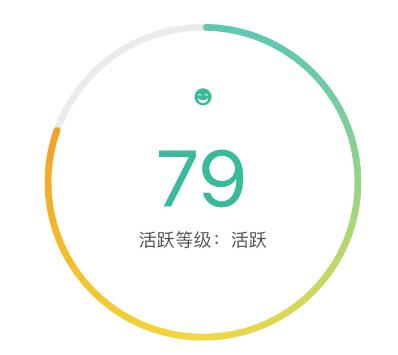

前言
最近在做hybrid app开发过程中用到了环形进度条，根据UI原型需求：
1、环形进度条表示进度百分比；
2、圆环进度颜色可实现渐变；
3、圆环要达到多屏幕自适应效果。

环形进度条的实现，问一下度娘就可以发现一大堆的方案。
开始为了杆进度，直接采用了开源的jquery插件实现（该插件的实现方法及遇到的坑会在另一篇文章中介绍）。但是当开发任务完成后，就考虑到优化问题，然后就不想用插件，也不想用canvas来实现，毕竟在自适应方法也存在弊端（好吧，其实主要原因还是canvas技术我还不够熟悉啦）。
言归正转，下面讲解下如何使用CSS3实现圆形进度条。
CSS3 实现进度100%
CSS用border和border-radius可以画出圆环，但是这样的圆环不能动，而且能产生进度条效果需要圆环是从0开始到100%逐渐变化，很显然不是一个完整的圆环在旋转。
1、把整个圆环分成左右两部分；
2、左右两部分都有半个圆环在旋转，比如先让右边的半圆环，旋转到正好接住了左半部分，然后左边的半圆环开始旋转
1. 画右半圆环
首先实现右半圆，右半圆html结构：
<div class="right">
<div class="rightcircle"></div>
</div>rightcircle是半个圆环,CSS样式如下：
.right{
position: relative;
width: 200px;
height: 250px;
overflow: hidden;
}
.rightcircle{
width: 200px;
height: 200px;
border:8px solid transparent;
border-radius: 50%;
position: absolute;
top:0;
right: 0;
border-top:8px solid #38B99B;
border-right:8px solid #38B99B;
-webkit-transform : rotate(45deg);
-moz-transform : rotate(45deg);
-o-transform : rotate(45deg);
transform : rotate(45deg); /* 旋转45度 */
}
右半圆环实现样式如下：
其实本来是一个半圆弧，但由于我们设置了上边框和右边框，所以上边框有一半溢出而被隐藏了，所以我们可以通过旋转得以还原。
外层的div有一个overflow:hidden属性，我们先把这个半圆旋转到div的另一边隐藏了，然后再慢慢改变这个半圆环的角度，让它显示出来不就行了。稍微计算下就可以知道，-135deg正好能将右半圆隐藏在外层div的左半部分:
.rightcircle{
width: 200px;
height: 200px;
border:8px solid transparent;
border-radius: 50%;
position: absolute;
top:0;
right: 0;
border-top:8px solid #38B99B;
border-right:8px solid #38B99B;
transform : rotate(-135deg); /* 旋转45度时正好能显示右半个圆，旋转-135度，正好能隐藏右半个圆 */
}这个-135deg是怎么得出来的呢?
我们来看下面的这张图：

矩形的上边界和右边界正好是对应这上图圆形的上半部分和右半部分，旋转到左侧正好隐藏的话，那就是逆时针旋转-135deg
2. 为半圆添加动画
整个右半圆已经隐藏了，那么我们让它慢慢显示出来，就需要给rightcircle添加一个animation动画。
/* 这里仅考虑webkit内核的情况，您可以写完整了 */
.rightcircle{
-webkit-animation-name: circle_right; /* 动画名称 */
-webkit-animation-duration: 5s; /* 完成一个动画需要的时间 */
-webkit-animation-timing-function: linear; /* 动画播放的方式，linear是匀速变化 */
-webkit-animation-iteration-count: infinite; /* 动画播放的次数，infinite是无限次数 */
}
@-webkit-keyframes circle_right{
0%{
transform : rotate(-135deg);
}
100%{
transform : rotate(45deg);
}
}3. 左半圆动画
左半部分就正好相反。
<div class="left">
<div class="leftcircle"></div>
</div>/* 这里仅考虑webkit内核的情况，您可以写完整了 */
.leftcircle{
-webkit-animation-name: circle_left; /* 动画名称 */
-webkit-animation-duration: 5s; /* 完成一个动画需要的时间 */
-webkit-animation-timing-function: linear; /* 动画播放的方式，linear是匀速变化 */
-webkit-animation-iteration-count: infinite; /* 动画播放的次数，infinite是无限次数 */
}
@-webkit-keyframes circle_left{
0%{
transform : rotate(-135deg);
}
100%{
transform : rotate(45deg);
}
}4. 完整圆环进度条<
html结构:
<div class="circle_process">
<div class="wrapper right">
<div class="circle rightcircle"></div>
</div>
<div class="wrapper left">
<div class="circle leftcircle" id="leftcircle"></div>
</div>
</div>CSS样式：
.circle_process{
position: relative;
width: 199px;
height : 200px;
}
.circle_process .wrapper{
width: 100px;
height: 200px;
position: absolute;
top:0;
overflow: hidden;
}
.circle_process .right{
right:0;
}
.circle_process .left{
left:0;
}
.circle_process .circle{
width: 160px;
height: 160px;
border:20px solid transparent;
border-radius: 50%;
position: absolute;
top:0;
transform : rotate(-135deg);
}
.circle_process .rightcircle{
border-top:20px solid green;
border-right:20px solid green;
right:0;
-webkit-animation: circle_right 5s linear infinite;
}
.circle_process .leftcircle{
border-bottom:20px solid green;
border-left:20px solid green;
left:0;
-webkit-animation: circle_left 5s linear infinite;
}
@-webkit-keyframes circle_right{
0%{
-webkit-transform: rotate(-135deg);
}
50%,100%{
-webkit-transform: rotate(45deg);
}
}
@-webkit-keyframes circle_left{
0%,50%{
-webkit-transform: rotate(-135deg);
}
100%{
-webkit-transform: rotate(45deg);
}
}
完整圆环进度条:
不同百分比圆形进度条
用js根据百分比动态控制旋转角度，即可实现不同百分比的进度条，进而可实现简易小闹钟。
简易小闹钟
另一种相似方法完成圆形进度环demo，该方法用到了rotateZ(angle)方法，Internet Explorer 和 Opera 不支持 rotateZ 方法。
demo